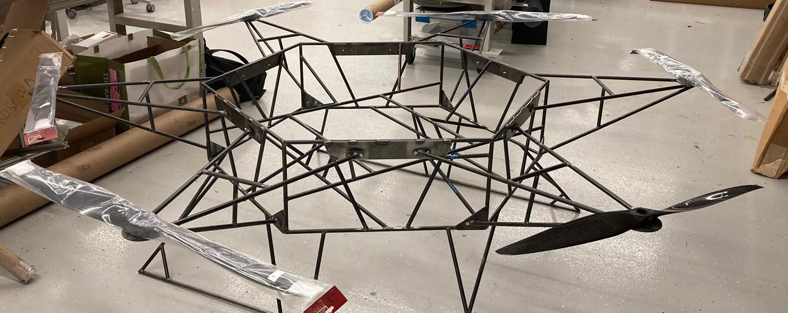

VFS: BoilerUp 1
This project is perhaps too large to be fully summarized here. But let me highlight a couple of things I’ve contributed to.
Over the summer, I was able to overhaul the vehicle’s testing procedures. Safety was one focus, ensuring that in the unfortunate event of a failure, no one would get hurt. Minimum distances from a loaded vehicle were defined. However, I ran into a small problem - we used deflection as a proxy for success and to validate our FEA results. But there was no procedure to measure these deflections at a distance. Using knowledge from my photography hobby, I wrote a new procedure for remote deflection measurement using a camera and tripod. I then tested this procedure and was within 0.12mm of the true value, resulting in a percent error of 3.2%.
I also helped lead the manufacturing effort for our iteration one vehicle. Over the course of about two months, I helped the team turn our weldment structure in CAD into laser-cutting drawings and finally into parts.
